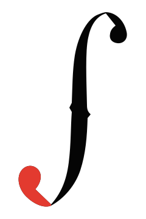
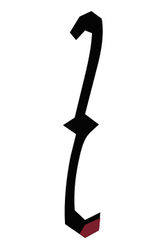

上下の終端、左右のノッチ、縦長のカーブだけを残し、正式ロゴの骨格へ整理します。
LOGO + FIRST VIEW
実物の骨格を、
ブランド記号へ。
実物トレースから細かな歪みと説明要素を減らし、F字孔の黒い面そのものを正式ロゴへ縮約しました。信号表現はWeb演出へ分離します。
01 / CONFLICTS & GAPS
先に解いた矛盾と不足
白い軌道線を静止ロゴと印刷物から外し、Webヒーローの補助演出だけに限定します。
最新指示を正とし、Ivory #F2EDE3 / Maple #C87532 / Wood #7A4526 / Red #E33A2Fに統一します。
連絡先、写真方針、フォント配信、名刺の印刷条件は、実データ入手後に確定します。
02 / THREE APPLICATIONS
用途別の3つの完成形
1RECOMMENDED

Formal Mark
黒いF字孔面と、形状へ統合した赤い下端だけで成立する正式ロゴです。
2

Animated Hero Mark
Formal Markへ白い補助軌道と一度だけの信号移動を重ねるWeb専用形です。
3

Small Icon
16pxでも上下終端と中央ノッチが残るfavicon・SNS専用形です。
| 評価軸 / 5点 | Formal | Hero | Small |
|---|---|---|---|
| 正式ロゴとしての強さ | 5 | 3 | 4 |
| 白黒印刷 | 5 | 2 | 5 |
| 名刺・ヘッダー視認性 | 5 | 2 | 5 |
| F字孔らしさ | 5 | 5 | 4 |
| 補助演出との拡張性 | 4 | 5 | 3 |
SELECTED / FORMAL MARK
Formal Mark
写真固有の細かな凸凹と白い軌道線を外し、F字孔の黒い面＋統合された赤い下端だけを正式ロゴとします。
- 正式ロゴ：軌道線・独立した赤丸なし
- 白黒印刷：終端を含む一つの面
- Webヒーロー：補助軌道と一度だけの信号移動
- favicon・SNS：Small Icon
03 / FIRST VIEW — MOBILE FIRST
推奨案を使ったファーストビュー
AI SOLUTION ENGINEER / CONTRABASS PLAYER
仕事の中にある
「毎回面倒」を、
AIと小さな仕組みで
改善します。
Excel、情報検索、書類作成、SNS運用、小さな業務アプリ。現在のやり方を聞き、現場で無理なく使える形まで設計します。
390 × 844pxを基準に、表示順をlabel → main copy → support → CTA → symbolとする。本文16px以上、CTA 48px以上、横スクロールなし。実運用の問い合わせリンクは正式な連絡先決定後に接続する。